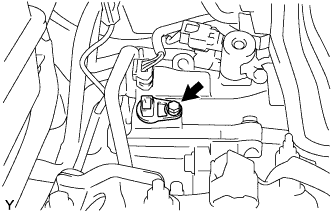
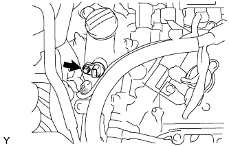
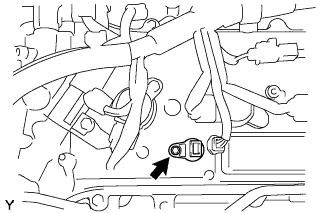
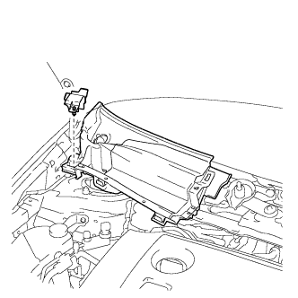
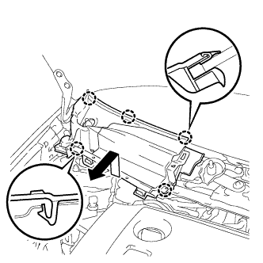
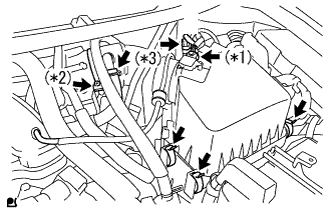
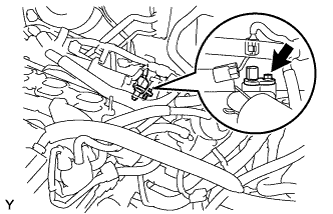

Cam Position Sensor (2GR-FE) Removal |
| 1. Remove V-bank Cover Sub-assembly |
 |
Place both hands on the front of the cover and lift it upward to disengage the 2 front clips, then continue lifting upward to disengage the 1 rear clips, and remove the V-bank cover.
| 2. Remove Crank Position Sensor NO.2 (Bank 1 Intake Side) |
 |
Disconnect the connector from crank position sensor No.2.
Remove the bolt and remove crank position sensor No.2.
| 3. Remove Crank Position Sensor NO.2 (Bank 2 Intake Side) |
 |
Disconnect the connector from crank position sensor No.2.
Remove the bolt and remove crank position sensor No.2.
| 4. Remove Crank Position Sensor NO.2 (Bank 2 Exhaust Side) |
 |
Disconnect the connector from crank position sensor No.2.
Remove the bolt and remove crank position sensor No.2.
| 5. Remove Front Wiper Arm Head Cap |
 |
Remove the 2 front wiper arm head caps.
| 6. Remove Front Wiper Arm & Blade Assembly RH |
 |
Remove the front wiper arm nut and front wiper arm & blade assembly RH.
| 7. Remove Front Wiper Arm & Blade Assembly LH |
 |
Remove the front wiper arm nut and front wiper arm & blade assembly LH.
| 8. Remove Hood to Cowl Top Seal |
 |
Disengage the 7 clips and remove the hood to cowl top seal.
| 9. Remove Front Side Panel Protector NO.1 LH |
 |
Disengage the pin and remove front side panel protector NO.1 LH.
| 10. Remove Cowl Top Ventilator Louver LH |
 |
Disengage the 11 claws and remove the cowl top ventilator louver LH as shown in the illustration.
| 11. Remove Front Side Panel Protector NO.1 RH |
 |
Disengage the pin and remove front side panel protector NO.1 RH.
| 12. Remove Cowl Top Ventilator Louver RH |
 |
Disengage the 5 claws and remove the cowl top ventilator louver RH as shown in the illustration.
| 13. Remove Windshield Wiper Motor & Link Assembly |
 |
Remove the 2 bolts and disconnect the windshield wiper motor & link assembly.
Disconnect the connector and clamp, and remove the windshield wiper motor & link assembly as shown in the illustration.
| 14. Remove Cowl Body Mounting Reinforcement RH |
 |
Remove the 3 bolts and remove the cowl body mounting reinforcement RH from the cowl top panel outer.
| 15. Remove Cowl Top Panel Outer |
 |
Disconnect the windshield deicer wire harness connector and disengage the 3 clamps, and detach them from the cowl top panel outer. (w/ Cold Area Specification)
 |
Disengage the clamps of the heater air duct splash shield seal No.2 and water guard plate RH, and bend each as shown in the illustration.
 |
Remove the 8 bolts and the cowl top panel outer.
| 16. Remove Radiator Upper Air Deflector |
 |
Remove the 9 clips and the radiator upper air deflector.
| 17. Drain Coolant (Toyota Genuine Super Long Life Coolant) |
Loosen the radiator drain cock plug.
Remove the reserve tank cap and drain the coolant.
Loosen the cylinder block drain cock plug and drain the coolant from the engine.

| 18. Remove Air Cleaner Cap w/ Air Cleaner Hose |
 |
Disconnect the air flow meter connector. (*1).
Disconnect ventilation hose No.2. (*2).
Disconnect the hose band (*3)
Disengage the 3 clamps and remove the air cleaner cap w/ air cleaner hose.
| 19. Remove Intake Air Surge Tank Assembly |
 |
Disconnect the vacuum hose from the throttle body assembly. (*1)
Slide the 2 clips and disconnect the water bypass hose No.2 and water bypass hose No.3 from the throttle body assembly (*2).
Disconnect the throttle motor connector from the throttle body assembly (*3).
 |
Disconnect the air control valve connector from the intake air surge tank.
Remove the 2 bolts and surge tank stay No.1.
Remove the 2 bolts and the throttle body bracket.
 |
Remove the 2 nuts from the intake air surge tank. (*1)
Using a socket hexagon wrench (5mm), remove the 4 bolts. (*2)
Remove the intake air surge tank and gasket.
| 20. Remove Crank Position Sensor NO.2 (Bank 1 Exhaust Side) |
Disconnect the connector from crank position sensor No.2.
 |
Remove the bolt and remove crank position sensor No.2.